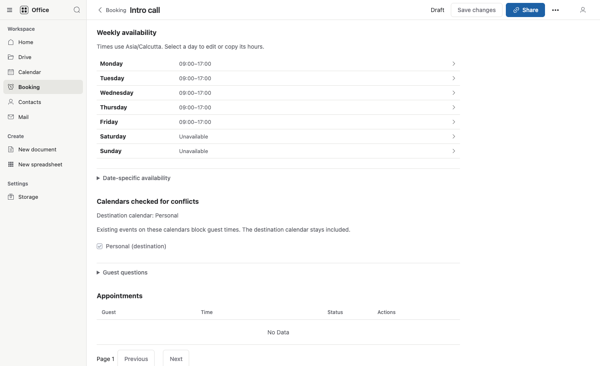

Control where your data lives
Your workspace uses the database and file storage you choose. You decide where to host it, who administers it, and how backups are kept. Your working files remain available to download from your installation.
{{intro}}
Documents, spreadsheets, files, mail, contacts, calendars and appointment scheduling are built into the same workspace. Run it on your own computer or server, choose who can access it, and decide where your data is stored.
Your workspace uses the database and file storage you choose. You decide where to host it, who administers it, and how backups are kept. Your working files remain available to download from your installation.
Access to the workspace is handled by your own installation. You control who can sign in and whether the workspace is reachable only on your computer, across your network or at a public address.
Documents and spreadsheets autosave, with visible save feedback and an explicit Save command. If a newer copy is found, saving pauses and keeps your draft available to review or download before reloading.
.vdocs copy with your formatting, images, tables and page layout intact..vsheets to keep its sheets, formulas and formatting.